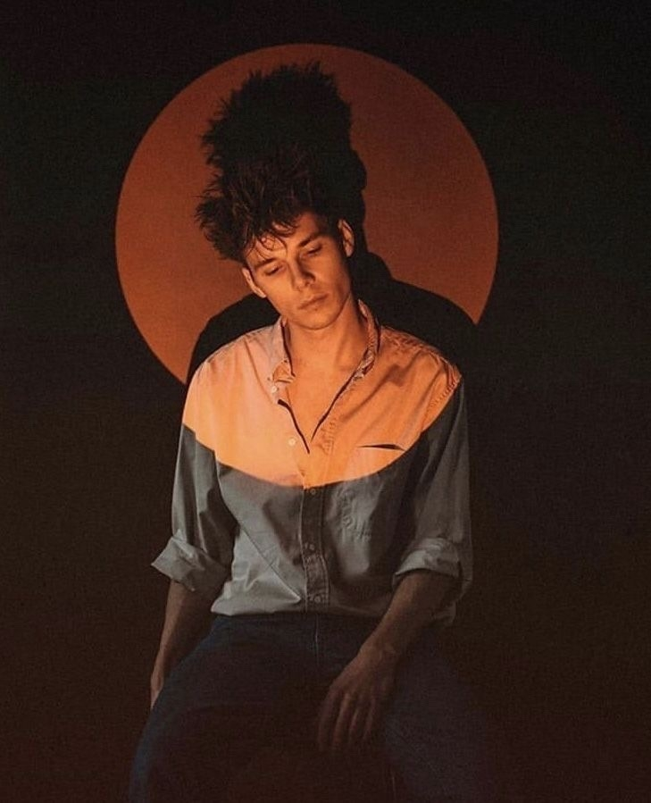

Привет, я Алексей

В фотографию я пришёл больше восьми лет назад — сначала как хобби, потом это стало делом жизни. Начинал с любительской камеры и портретов друзей, а сейчас снимаю свадьбы по всей России и за рубежом.
Больше всего в работе люблю естественный свет и живые эмоции. Не заставляю позировать, а ловлю настоящие моменты — смех, слёзы, объятия. Именно такие кадры хочется пересматривать снова и снова.
Работаю по всей России и с радостью выезжаю за границу. Готов подстроиться под ваш формат: скромная свадьба на 10 человек или большой праздник — для меня важны не масштабы, а атмосфера.
- ✦ 8+ лет опыта в фотографии
- ✦ 200+ съёмок и счастливых клиентов
- ✦ Работаю по всей России и за рубежом
- ✦ Люблю естественный свет